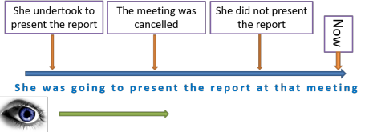

Correcting learners
 |
Correcting learners is a key teaching skill. It can
be overdone and some learners feel it gets tedious so handle with some
care.
In this guide, we are mostly concerned with correcting learners' production.
However, if you have followed the guide to the essentials of error
analysis (linked below), you will know that learners also make receptive errors.
That is to say, they misunderstand or misinterpret what they hear or
read.
The following assumes you have followed the essential guide to error and
understand terms such as referential, covert, phonological and
syntactical error etc.
If you don't try that guide first by
opening it in a new tab.
 |
Before you dive in |
Here is where teachers need to think on their feet. There are questions to ask whenever you hear an error in the classroom or see one in your learners' written work.
- Am I going to correct this?
- If the error isn't holding up communication and has nothing to
do with the subject of the lesson, it may be that correcting it will
lead you off on a tangent, chasing red herrings and serve to slow
down the lesson and confuse the learners. If that's the case
ignore it.
If, on the other hand, the error is impeding comprehension or is made in the language that is the target of what you are doing, then you will have to deal with it. - Do I need to correct this?
- Very often, learners can correct their own production so a quizzical look or stopping learners and getting them to retrace their steps and reconsider may be more effective than your correcting the error.
- Can anyone else correct the error?
- If the learners can't correct their own errors, perhaps someone else in the class can. If you think this is the case, give them the chance to do so.
- How will I correct?
- A last resort is normally to give
the correct answer yourself.
How we correct is next.
 |
Handling spoken error |
We said above that correction is a key teaching skill and, like
all skills, it improves with practice. There are, however,
some tried and trusted methods which we can learn outside the
classroom and then apply with increasing levels of confidence and
appropriateness.
Here are some of them:
 |
Looking for clues |
It is often enough just to give a few clues or hints to lead the
learner to the correct answer. This is especially the case if
you suspect that the learner can self-correct or be led carefully to
do so with questions and suggestions such as
There's
something wrong with the order of the words.
What preposition do
we need here?
What tense should this be?
Who did the work?
Are we talking about
tomorrow or today?
Is this a long 'a' sound or a short one?
and so on.
If all else fails, however, there are, obviously, times when
providing the right answer is the best approach providing you make
sure that the learner can produce the correct language independently
after you have done so.
 |
Grimacing |
This only applies to times when you know for certain that
the learner can self correct. If you use the technique at
other times, for example, when the learners clearly have no idea
what the right word is, how to pronounce something or how to
form a correct bit of syntax, then you will frustrate and
irritate them. That's not good.
For example:
 |
 |
or |
 |
| Probably not | What! | Ouch |
 |
Finger correction |
This is a technique which works very well for simple syntactical
errors such as
We arrived to the hotel very late in the
evening
in which the learner has not recognised that, in English, the
verb arrive is usually followed by a prepositional phrase
with at. This is an understandable mistake
because we do say:
She came to my house
We got to the station
etc.
The technique involves using the fingers to count and stopping and
grabbing the third finger with the other hand.
The learner is then primed to notice where the error lies rather
than starting to doubt that the whole sentence is wrong (which it
isn't).
Phonological error: drilling and other techniques |
Phonological errors are traditionally addressed by some sort of
mini-drill and there's a guide to drilling on this site, linked
below.
A particularly useful technique, explained there is called back
chaining.
Other techniques include tapping out the rhythm of a
sentence to get the stress right or using the phonemic script (if
the learners are familiar with it) to show the difference between,
e.g., sit and seat or hop and hope (/sɪt/
and /siːt/ or /hɒp/ and /həʊp/).
Rhymes are also useful tools because if a learner can pronounce,
e.g., station then the fact that a difficult word such as
nationalisation rhymes is some help to being able to
pronounce it.
Isolating sounds is another way to help. If, for example, a
learner can correctly pronounce the short i sound in
hit, bit, sit etc. you can lead her to the pronunciation of the
second syllable in contribution quite painlessly.
 |
Using time lines |
When it is clear that the concept of a tense form is in question
and learners have not grasped, especially, the relationship between
tenses, a time line can help (with presentation as well as
correction, of course.
Here's an example to explain the concept of what is known as the
future in the past:

And that will work just as well for:
I was about to go out when he rang
I She was on the point of losing her temper
and so on.
There is a dedicated guide on this site to constructing and using
time lines, linked below.
 |
Noticing and using the model |
When teaching a syntactical or structural point, most people will opt for a model sentence or sentences which will exemplify the issues. For example, when teaching simple time adjuncts, people might got for displaying and explaining:
He lived here during his studies
She left an hour ago
I have been here since 1998
However, leaving it at that is not adequate if you want the learners to notice the critical issues a syntactical error is likely to arise unless you revisit the board and have something like:
He lived here
during
his studies
She left an hour ago
I have been here
since 1998
and even then you will need to expand that to something like:

and with that in front of your learners, you can easily point out:
- the correct tense form (past simple vs. present perfect)
- the prepositions (during and since)
- the postposition (ago)
- the appropriate form of time expression (events, periods, dates)
so, when they make a mistake, you can quickly point out which bit of the table they have got wrong.
This technique relies on getting learners to notice the salient features of the language.
 |
Echoing |
This is more than simply repeating what a learner has just said
(which is useless and deeply irritating, by the way).
Echo correction means taking the learner's statement and stressing
the bit that you want to focus on. For example:
You said you
SEE him yesterday?
There were three CHILD?
 |
Recasting |
This is a subtler way to correct and requires the learner to be
paying some attention because the aim is to get the learner to
notice the gap, not just the structure as we saw above under the
model.
Again, you have to make sure they can do that by stressing the
feature in your production which differs from what has been
produced.
For example:
Learner: I will taking the train.
Teacher: Oh, you will
BE TAKING the train.
or
Learner: I should to go.
Teacher: Oh, you should GO.
 |
Delayed correction |
Correction, especially if badly times, can be interruptive and
frustrate learners who are trying to get on and communicate
something important.
So, during communicative activities, unless the error is very
serious (an preventing communication), keep quiet and take notes.
Then, when you reach the end of the activity, you can call
everyone's attention to the errors and see if they can self-correct.
If they can't, you need to backtrack, of course, because something
has gone very wrong with the teaching and learning procedure.
 |
Handling written error |
One of a teacher's many chores is correcting learners' written
work. It may be a chore but learners appreciate the guidance
and help you can give when not under pressure in the classroom.
The same considerations apply here in many cases. It is not
very motivating to receive a piece of homework covered with lots of red
marks, crossings out and rewritten sections. So, try:
 |
Encouraging self-correction |
Instead of correcting errors in written work, we can simply
underline them and get the learner to proofread the text and try to
correct as many as they can.
This is a rather hit-and-miss procedure, however, because learners
are often not aware of what to look for so, to help them, develop a correction code like:

It doesn't matter too much what sorts of code symbols and letters
you use, providing only that you are consistent and the learners
understand it.
You should also, of course, have a code for something which is good.
Many people use of
 for that.
for that.
 |
Working together and peer correction |
We can encouraging peer-correction by having learners write
together (with all of them writing the same text or agreeing on the
right answers) and helping each other. We can also ask the learners to give their writing to others for
comments and correction.
Do not overdo this for the sake of authenticity. Writing is
often a skill that we practise alone.
 |
Wisely ignoring error |
Just as we saw concerning spoken error in the classroom, it is
often wise to ignore some written errors.
This is especially true if learners attempt language so far beyond
their current mastery level that correcting it would be confusing
and frustrating.
It is also true if you see something which is obviously just a slip
or a typographical error.
| Related guides | |
| essentials of error | for the guide to types and sources of error |
| drilling | for a guide to one teaching technique, often employed to handle (or prevent) error |
| using time lines | for the dedicated guide to a useful presentation and correction method |
| how learning happens | for the guide to some major theories of learning |
| feedback | to see how the type of feedback which is given can affect how error is handled |
| the in-service guide | for a more technical and fuller guide to error |